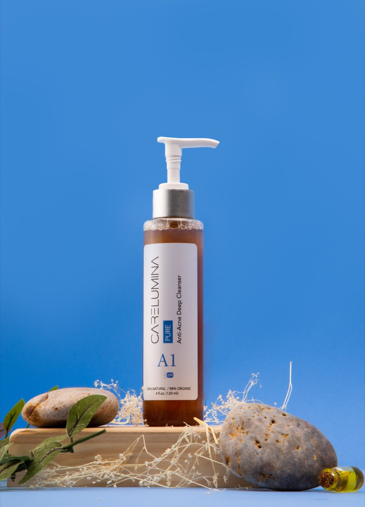

Making ideasimpossibleto ignore.
Brand systems Campaigns Moving image
Colorado EN / ES Two Emmy Awards, 2023
Selected work
01 — 05


More work
Video and photography →
Welcome to Lafayette. A local guide for Sundance Film Festival visitors.

E-Bike program. A social series for the City.

Talent showcase. Telemundo Colorado.

Photography. Food, product and events.
A little about me
A clear idea.
A lasting feeling.
More than ten years across local government, broadcast and advertising. I’ve led a production team of educators, videographers and designers, mentored producers, and today guide brand and accessible design for more than ten City departments.
Based in Colorado. Working in English and Spanish. I’m looking for a role leading a creative, brand or communications team.
- Worked with
- City of Lafayette · NBCUniversal · Univision · Telemundo Colorado
- Awards
- Two Emmy Awards · CBA Awards of Excellence · 2023
- Trained at
- Deutsche Welle, Germany (MA Cinematography) · Universidad Central, Bogotá (BA Advertising)
- Strengths
- Brand strategy · campaigns · video · accessible design · bilingual communications